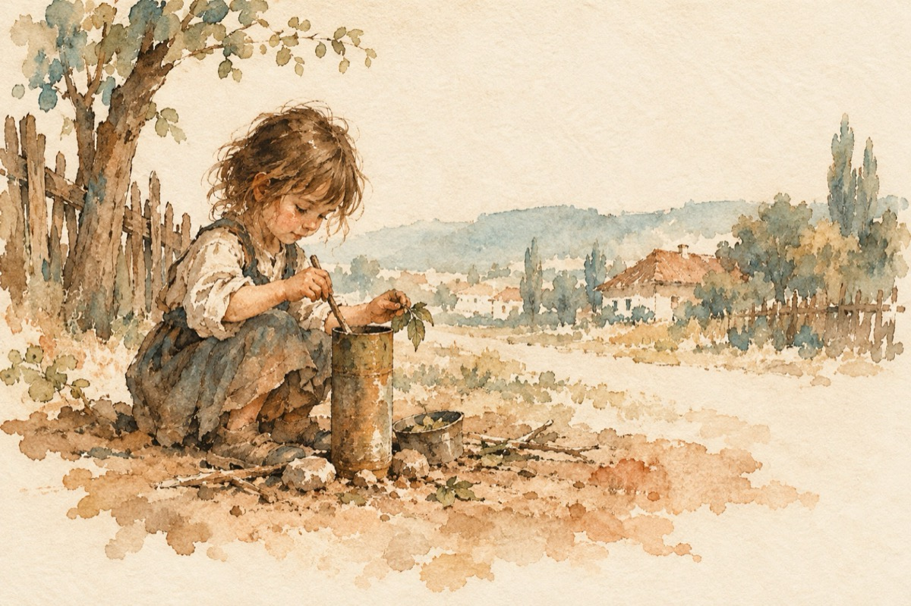

Am copilărit
Eu am copilărit cu avioane
Cu mașini blindate, din răsărit în apus.
Cu morți și răniți, of; Doamne!...
Avioanele nu erau jucării; aruncau bombe de sus!
Eu mă jucam printre ele fără frică
Nu cunoșteam acest crud sentiment
În tuburi de obuze, făceam mâncărică!
Și din cartușiere făceam ornament!
Plângeam foarte des, din lipsă de tată
Cu foamea o duceam cât cuprinde
Războiul nu l-a mai lăsat pe tata să vină acasă
Umblam dintr-un sat în altul, cu mămăliga-n merinde!
Așa s-a dus copilăria ,,luată de ape”!
Și totuși îmi mai este dor de ea.
Lumea era atunci mai aproape
La nevoie, te mai și ajuta!...
Generații au fost și sunt ca și acum
Ele în timp se succed
Dar nu există foc fără fum
Ce se întâmplă astăzi, eu nu mai înțeleg!...
Dispare UMANUL dintre noi, da!...
Singura ce-și păstrează marca
Este cea de ieri și de azi, COPILĂRIA!...
Pe noi ne conduc cei mari, banul și vrajba!
Vasile Groza